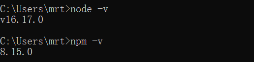

1. 开发工具配置
1.1 开发工具版本
服务端开发基础工具版本列表
| 开发工具 | 版本号 |
|---|---|
| IntelliJ-IDEA | 2021.x以上版本 |
| Java | JDK-1.8.x |
| Maven | 3.6.x以上版本 |
| Mysql | 8.x |
| VMware-workstation | 15.x |
| CentOS | 7.x |
| nacos-server- | 1.4.1 |
| rabbitmq | 3.8.34 |
| redis | 6.2.7 |
| xxl-job-admin: | 2.3.1 |
项目应从基础 JDK 环境开始配起（基础），JDK环境变量配置和IDEA中配置JDK在此不再演示，需要学员自行进行配置，下面我们开始配置Maven环境。
1.2 IDEA环境配置
1.3.1 IDEA配置环境编码
上图解释： 注释①：全局字符集设置
UTF-8注释②：项目（Project）字符集设置UTF-8注释③：项目中的properties文件的编码集设置UTF-8，后面的选项要勾选，这样中文字符会自动转化为16进制
1.3.2 IDEA设置 Java 编译级别

上图解释： 注释①：设置 JDK 版本 注释②：设置 Java 编译级别
1.3.4 IDEA自动导包设置
IDEA可以自动优化导入包，但是有多个同名的类调用不同的包，必须自己手动Alt+Enter设置， 下面可以通过设置来进行导包优化。

上图解释： 勾选上图面板中的两个选项
1.3.5 IDEA代码提示忽略大小写
IDEA代码提示默认是区分大小写的，设置为提示忽略大小写，编译我们后期的开发。
上图解释： 注释①：在Code Completion选项面板中，去掉 Match case 前的选项 。
1.3.6 设置代码注释模板
为了规范代码编写，一般在企业中会有自己的开发规范，开发规范中对代码的注释也会有一定的规范，比如下边的规范：
1、所有的类、接口、枚举类型、类的属性、方法的都强制要求编写注释，注释必须使用javadoc规范，使用/***/多行注释格式，不允许使用//xxx单行注释方式。比如下边的注释是不允许的：
xxxxxxxxxx//本类是一个测试类//本类的功能是....class T1{}
2、所有的类、接口、枚举类型的注释要求写明作者、功能、日期。
3、代码如果修改需要修改相应的注释。
IDEA提供代码注释模板，方便团队规范代码 的注释。
下边配置IDEA上的代码注释：
1、注释中作者信息非常重要，可以通过虚拟机环境变量进行配置。
点击 Help->Edit Custom VM Options...打开idea.vmoptions文件，在最下面增加一行-Duser.name=用户名。
2、配置类、接口、枚举注释模板。
打开IDEA代码模板配置界面，分别配置Class、Interface、Enum.
注释模板内容如下：
xxxxxxxxxx/*** @description TODO* @author ${USER}* @date ${DATE} ${TIME}* @version 1.0*/
3、配置方法模板
打开Line Templates界面
首先添加一个Template Group：

输入名称，点击“OK”
在分组下添加代码模板，

点击“Change”,选择Java下的所有项目

填写模板的内容：
Abbreviation：输入*星号，在方法上输入反斜杠加星号自动生成注释。
Description：模板的描述
Template text: 模板内容
如下：
xxxxxxxxxx*** @description TODO* $params$* @return $return$* @author $user$* @date $data$ $time$*/
点击Edit Variables编辑模板中用的变量
对于params方法的参数需要填写脚本，如下：
xxxxxxxxxxgroovyScript("if(\"${_1}\".length() == 2) {return '';}else {def result='';def params=\"${_1}\".replaceAll('[\\\\[|\\\\]|\\\\s]', '').split(',').toList();for(i = 0; i < params.size(); i++) {if(i==0){result+='@param ' + params[i] + ' '}else{result+='\\n' + ' * @param ' + params[i] + ' '}};return result;}", methodParameters());
其它项目按照上图填写，点击“OK”。
1.3 Maven仓库配置
maven使用3.6以上的版本，课程资料中提供了apache-maven-3.8.6-bin.zip。
拷贝老师提供的maven仓库并解压，在本机中Maven的setting.xml文件中配置maven仓库位置，==maven仓库的目录路径不要有特殊字符和中文（切记）。==
1.2.1 Maven中配置仓库位置
在Maven的conf目录中setting.xml文件中配置好仓库的位置并配置阿里云中央仓库地址。
解压下发的仓库 repository.zip 到本地硬盘

配置到conf目录中的setting文件中


maven的中央仓库设置为阿里云服务

1.2.1 IDEA中配置maven
下边在idea中配置maven安装目录及本地仓库的位置。
在IDEA中： File --> Settings --> Build --> Build Tools --> Maven
Maven项配置

下图中的 ① ② ③ 项要配置成自己本地中的路径位置
上图解释： 注释①：设置自己的maven路径（maven的根目录） 注释②：配置maven的settings文件的位置 注释③：配置maven的仓库位置
1.4 虚拟机配置
项目中用到的一些服务端软件如：MySQL、Nacos配置中心、RabbitMQ消息队列等通常会安装在企业局域网的服务器中，开发人员去远程连接它们。
如下图：

在教学中我们在自己的电脑上安装虚拟机，虚拟机代表了企业局域网中的服务器。
1.4.1导入虚拟机
一般在企业中这些服务端软件不需要我们自己去安装，所以这里老师给大家提供了现成的虚拟机，大家需要安装VMware-workstation 16.x 虚拟机软件。

1、设置网络
点击 “编辑--》虚拟网络编辑器”配置网络地址，地址须与下图一致。

2、导入虚拟机
解压老师提供的虚拟机文件CentOS7-64-2.zip，进入解压后的文件架，双击"CentOS 7 64 位.vmx" 文件，选择复制虚拟机。
对此虚拟机的设置建议8G内存、4核CPU。

设置完成，启动虚拟机。
3、远程连接虚拟机
使用客户端工具远程 连接 虚拟机中的CentOS系统。
账号与密码为：root/centos
首先执行命令： systemctl start docker 启动docker。
执行启动脚本: sh /data/soft/restart.sh
查询docker容器：docker ps
如下图：

软件清单如下：
xxl-job-admin:2.3.1
minio:RELEASE.2022-09-07T22-25-02Z
redis:6.2.7
elasticsearch:7.12.1
gogs
rabbitmq:3.8.34
nacos-server:1.4.1
mysql:8.0.26
1.4.2 安装虚拟机
如果如果电脑问题无法导入虚拟机需要手动安装虚拟机。
首先安装VMware-workstation 16.x 虚拟机软件。
本项目的服务端软件安装在CentOS7的操作系统下，所以需要安装一个CentOS7的虚拟机。
1.4.2.1 下载CentOS7的安装包
下载地址：http://isoredirect.centos.org/centos/7/isos/x86_64/
CentOS7只提供了64位，这里选择DVD版本下载。
1.4.2.2 安装CentOS7
在VMware中新建一个虚拟机，选择刚才下载的CentOS7的iso映像文件，然后一步一步进行安装，对CentOS安装过程不熟悉的同学可以参考B站黑马程序员的Linux视频进行学习。
1.4.2.3 安装docker及软件
CentOS7的虚拟机安装成功后需要安装Docker，并在Docker中安装各各服务端软件：
1 xxl-job-admin:2.3.1：
xxxxxxxxxx下载镜像docker pull xuxueli/xxl-job-admin:2.3.1
解压xxl-job-2.3.1.zip,找到 配置文件 application.properties

修改数据 库连接 配置如下：
xxxxxxxxxxspring.datasource.url=jdbc:mysql://192.168.101.65:3306/xxl_job2.3.1?useUnicode=true&characterEncoding=UTF-8&autoReconnect=true&serverTimezone=Asia/Shanghaispring.datasource.username=rootspring.datasource.password=mysqlspring.datasource.driver-class-name=com.mysql.cj.jdbc.Driver
在centos上创建目录
创建/data/soft/xxl-job
创建/data/soft/xxl-job/applogs
将配置文件 拷贝到 /data/soft/xxl-job/application.properties
创建容器：
xxxxxxxxxxdocker run -d -p 8088:8080 --name xxl-job-admin -v /data/soft/xxl-job/application.properties:/application.properties -v /data/soft/xxl-job/applogs:/data/applogs -e PARAMS='--spring.config.loation=/application.properties' xuxueli/xxl-job-admin:2.3.1
访问
http://192.168.101.65:8088/xxl-job-admin
账号密码：admin/123456
2 minio:RELEASE.2022-09-07T22-25-02Z
xxxxxxxxxxvi docker-compose.yml脚本内容如下：version: '3'services:minio:image: minio/minio:RELEASE.2022-09-07T22-25-02Zcontainer_name: minioports:- 9000:9000- 9001:9001volumes:- /var/minio/data:/data- /var/minio/config:/root/.minioenvironment:MINIO_ACCESS_KEY: "minioadmin"MINIO_SECRET_KEY: "minioadmin"command: server /data --console-address ":9001" -address ":9000"restart: always
执行：docker-compose up -d
3 redis
创建一个文件夹
xxxxxxxxxxmkdir redis
进入redis文件夹中创建一个docker-compose.yml文件
xxxxxxxxxxcd redis vi docker-compose.yml
在docker-compose.yml中加入以下内容
xxxxxxxxxxversion: '3'services:redis:container_name: redisimage: redis:5.0.7restart: alwaysports:- 6379:6379volumes:- ./conf/redis.conf:/etc/redis/redis.conf:rw- ./data:/data:rwcommand: redis-server /etc/redis/redis.conf --appendonly yesenvironment:- TZ=Asia/Shanghai
redis文件夹下执行脚本
docker-compose up -d
4 elasticsearch:7.12.1
docker-compose.yml内容如下：
xxxxxxxxxxversion: '3'services:elasticsearch:image: elasticsearch:7.12.1container_name: elasticsearchrestart: alwaysenvironment:- bootstrap.memory_lock=true- http.cors.enabled=true- http.cors.allow-origin=*- "discovery.type=single-node"- "ES_JAVA_OPTS=-Xms512m -Xmx512m"ulimits:memlock:soft: -1hard: -1volumes:- /data/soft/elasticsearch/plugins:/usr/share/elasticsearch/pluginsports:- 9200:9200- 9300:9300kibana:image: kibana:7.12.1container_name: kibanaenvironment:- SERVER_NAME=kibana- ELASTICSEARCH_URL=http://192.168.101.65:9200- XPACK_MONITORING_ENABLED=trueports:- 5601:5601depends_on:- elasticsearchexternal_links:
因为在创建elasticsearch容器的时候，映射了目录，所以可以在宿主机上进行配置ik中文分词器
在去选择ik分词器的时候，需要与elasticsearch的版本好对应上
把资料中的 elasticsearch-analysis-ik-7.12.1.zip 上传到服务器上,放到对应目录（plugins）解压
下面我们需要把课前资料中的ik分词器解压缩，重命名为ik
最后将kibana切换为中文
在config/kibana.yml中添加i18n.locale: "zh-CN"
操作如下：

5 gogs
docker pull gogs/gogs
mkdir -p /data/soft/gogs
docker run --name=gogs -d -p 10022:22 -p 10880:3000 -v /data/soft/gogs:/data gogs/gogs
docker start gogs
在mysql创建数据库gogs
访问gogs安装软件
配置一系列的信息后开始安装
网上很多教程有错误，配置时注意下图中的错误点及正确的配置方法

安装完成自动跳转到 http://192.168.101.65:10880/
6 rabbitmq:3.8.34
7 nacos-server:1.4.1
8 mysql:8.0.26
1.5 Git环境配置
1.6.1 搭建个人Git环境
在发放的虚拟机中已经安装了Gogs 服务，Gogs和GitHub、GitLab一样都是Git托管平台，Gogs相比它们两者更轻量。Gogs的官网地址：https://gogs.io/
每位同学把虚拟上的Gogs服务作为远程仓库，每天练习的代码都需要上传至Gogs。
首先在个人电脑上安装Git，并在IDEA上进行配置。
进入Gogs找到项目仓库，仓库地址：http://192.168.101.65:10880/gogs/xuecheng-plus，如下图：

打开IDEA，从此仓库创建项目。

创建成功：

1.6.2 搭建团队Git环境
在项目实战过程中，全班同学分成若干团队（小组），由于Leader（组长）在Gogs平台创建仓库，团队成员共享组长创建的仓库，协作开发。
通常一个项目由多个团队协作，如：研发团队、测试团队、产品团队等。
1、首先创建一个组织
使用gogs/gogs账号登录gogs平台。
该组织通常以项目名命名，填写组织名称。

创建成功，进入管理面板修改组织信息
点击编辑，填写组织名称。

修改成功，进入首页点击组织名称

进入组织首页

下边开始创建团队
假如创建研发团队，填写团队名称
选择权限等级，注意：这里即使选择了权限等级也需要在仓库管理中去管理协作者的权限。
团队创建成功

团队创建成功下边开始创建成员账号 。
首先在用户管理中添加账号分配给成员。

然后在下边的界面 中向团队添加成员
团队和组织创建完成，下边创建仓库，进入组织，创建仓库。

填写仓库信息
创建成功，仓库地址：http://192.168.101.65:10880/xuecheng-plus-group1/xuecheng-plus-group1.git，如下
下边配置使用仓库的人员
点击“仓库设置”，
添加协作者，将团队成员的账号添加为协作者。
添加完成注意分配权限，如下图，通常测试人员为读取权限，开发人员为读写权限。

团队Leader需要将初始代码上传至Git仓库，团队成员通过Idea克隆一份项目代码，通过此仓库进行协作开发。
1.6 前端工具安装
1.6.1 安装Visual Studio Code
我们在进行前后端连调时需要运行前端工程，下边我们安装前端工程运行的环境。
所需要的软件可以自行下载，也可从下发的开发工具目录获取。
首先安装nodejs v16.17.0
安装完成，查看版本号

前端工程采用Visual Studio Code工具运行，版本为1.70.2
安装后运行VScode，下边需要安装一些常用的插件。

在上图搜索栏中输入插件名称进行搜索，进行安装。
搜索出来点击插件信息，在右侧进行安装

如果未安装则有安装按钮，如果已安装则有卸载按钮。
下边的所要安装的插件。


1.6.2 运行前端工程
解压课程资料包中的project-xczx2-portal-vue-ts.zip，这就是教学机构管理的前端工程。
解压后用vs code打开project-xczx2-portal-vue-ts目录。
然后打开终端窗口

运行 npm install -g yarn 安装yarn

安装完成，查看版本
如果在运行 yarn -v 时发现无法运行，显示如下提示信息。
可按下边的方法进行解决：
在win10桌面左下角的搜索栏中输入powershell，以管理员身份运行，弹出命令窗口
输入set-ExecutionPolicy RemoteSigned
输入y 此时，输入 get-ExecutionPolicy
然后重启VS Code
在VS Code的左下角右键，打开npm脚本

打开后如下：

运行serve，启动前端工程
开始启动前端工程

启动成功
发现出现http://localhost:8601/的地址说明启动成功，到此前端环境安装完成。